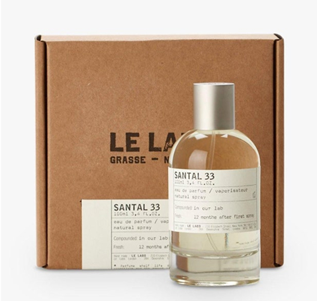
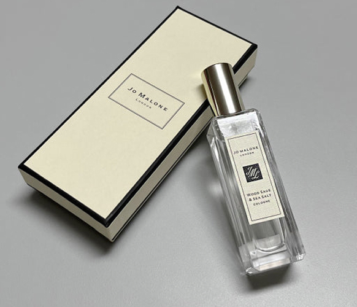

안녕하세요! 다들 요즘 날씨 완전 가을가을하죠🍂
요즘 향수 바꿔보려고 이것저것 시향 중인데, 세 개 중에서 도저히 못 고르겠어요ㅠㅠ
제가 고민중인건 르라보 상탈33 / 조 말론 / 우드 세이지 앤 씨 솔트 / 디올 / 미스 디올 블루밍 부케 요것들 중에 고민중이에요 ..
요즘은 너무 무겁지도, 너무 가볍지도 않은 따뜻한 우디 플로럴 계열 찾고 있거든요. 혹시 이 셋 다 써보신 분 계신가요?
가을에 어울리는 향으로 뭐가 제일 나을지 조언 부탁드려요 🙏✨
INSCENT TALK
세 가지 향수 중에 뭐가 저한테 더 어울릴까요?



상탈 33이요!! 처음엔 낯설어도 잔향이 진짜 미쳤어요. 특히 니트 입고 나가면 향이 은근하게 퍼져요 😭
10분 · 답글달기 · 신고 · ♥ 좋아요 2개
전 우드 세이지 앤 씨 솔트 추천이요! 가을에도 괜찮고 겨울에도 부담 없어요. 너무 독하지 않아서 회사에서도 딱이에요.
21분 · 답글달기 · 신고 · ♥ 좋아요 0개
미스 디올 블루밍 부케는 예쁜데 너무 달아요ㅠㅠ 저는 한 번 쓰고 친구 줬어요.
41분 · 답글달기 · 신고 · ♥ 좋아요 1개
저도 상탈 33 한 표! 근데 확실히 호불호 있어요. 첫 향은 좀 가죽 같아서 놀랄 수도 있어요.
51분 · 답글달기 · 신고 · ♥ 좋아요 1개
셋 다 써봤는데, 개인적으로 ‘가을 감성’은 상탈 33이 제일이에요.잔향이 진짜 따뜻해서 옷에 남으면 계속 맡고 싶어요.
1시간 · 답글달기 · 신고 · ♥ 좋아요 5개
전 우드 세이지 앤 씨 솔트요! 살결 위에 뿌리면 은은하고 약간 짭조름한 바람 느낌나요ㅎㅎ
10분 · 답글달기 · 신고 · ♥ 좋아요 2개